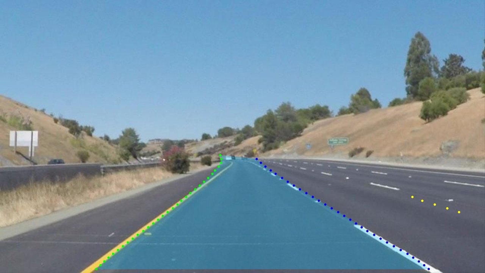

Queen's AutoDrive
Two years building a Level 4 autonomous vehicle for the SAE AutoDrive Challenge, from training neural networks to debugging why the car decided to ram a table.
Mission
Queen's AutoDrive competes in the SAE AutoDrive Challenge, a multi-year competition to develop a Level 4 autonomous vehicle. Level 4 means the car drives itself in defined conditions, no human backup required.
I joined the team for two separate years and worked on a different part of the system each time. Year one was teaching the car to see the road. Year two was making all the pieces talk to each other without anything going wrong. One workbench did not survive year two. This page is the investigation.
System architecture
An autonomous vehicle is essentially a rolling network. Cameras, LiDAR, radar, GPS, and IMU all generate data that has to reach the compute stack, and commands flow back out to steering, throttle, and brakes. Most of that traffic moves over the CAN bus.
Perception model
UFLD (Ultra-Fast Lane Detection), lane finding treated as row classification instead of pixel segmentation
Backbone
ResNet-18, chosen for speed on embedded hardware
Compute
Jetson Xavier NX running the perception stack
Optimization
TensorRT with FP16 quantization and layer fusion
Middleware
ROS2 sensor fusion, path planning, and control nodes
Vehicle bus
CAN, with the compute and control nodes synchronized at 10Hz
Information flow
Everything the car does is one chain, run over and over. A frame comes in at one end, and a physical action comes out the other.
-
Stage 01
PerceptionMy scope, Year 1
Camera feed in. UFLD finds the lanes at roughly 30 frames per second on the Jetson.
-
Stage 02
Localization
GPS and IMU data place the vehicle in the world. Owned by other sub-teams.
-
Stage 03
Decision
Path planning and control nodes decide what the car should do next.
-
Stage 04
CAN commandMy scope, Year 2
The decision leaves the computer as CAN messages addressed to the vehicle's ECUs.
-
Stage 05
Vehicle response
Steering, throttle, and brakes act on whatever arrived.
My two years sat at the ends of this chain: teaching stage one to see, then making sure stage four said what stage three meant. Stage five does not ask questions. A malformed message at stage four becomes motion at stage five. Section 07 documents what that looks like.

Vehicle communication
The compute stack and the vehicle meet on the CAN bus, with the ROS2 sensor fusion, path planning, and control nodes synchronized over it at 10Hz. Understanding the message protocols became my specialty in year two. The work broke down into four jobs:
Message decoding
Reverse-engineering proprietary CAN IDs and data formats from the vehicle's ECUs
Protocol design
Defining custom message formats for our added sensors and actuators
Bus monitoring
Diagnostic tools to trace message flow and catch errors
Safety interlocks
Watchdog systems that kill autonomy if communication fails
When something breaks in an autonomous vehicle, it could be anywhere: sensor, network, compute, actuator. When messages stop flowing, you need to know which node died and why. The tooling, CAN sniffers, log analyzers, and real-time dashboards, existed to answer that question quickly.
Integration responsibilities
Lane perception
The car needs to know where the road is at all times. That sounds simple until lane markings fade, construction zones draw conflicting lines, and a Kingston winter buries everything for half the year.
My job was training and fine-tuning the UFLD model on our custom dataset: hours of driving footage from around Kingston, annotated frame by frame. Learning rate too high, the model diverges. Too low, training takes forever. Augmentation too gentle, it only works in sunny weather. Too aggressive, it thinks everything is a lane. Weeks of hyperparameter tuning and loss curves.
System integration
After a year of CAN bus work on Formula SAE, I came back to AutoDrive on the integration team. Different challenge, same car: making all the subsystems communicate reliably.
That meant the four jobs in section 04, plus the diagnostic work of isolating faults across a system where the failure could be in any layer. Getting one subsystem to work is development. Getting all of them to work together is integration, and it is a different discipline.
Why UFLD
Instead of classifying every pixel, which is slow, UFLD divides each image row into grid cells and predicts which cell contains the lane. That reduces the problem from millions of pixel classifications to thousands of row classifications, which is what makes real-time inference possible on embedded hardware.
# Traditional segmentation: O(H x W x C) per frame
# UFLD: O(H x G x L) per frame
# Where G = grid cells (~200), L = lanes (typically 4)
def process_lanes(image):
resized = cv2.resize(image, (800, 288))
predictions = model(resized)
lanes = decode_predictions(predictions)
return lanes


Test environment
Two environments, two purposes.
The garage. Controlled testing of protocol and software changes on the real vehicle. Safety protocols required a person in the driver's seat, ready to hit the emergency stop, for every test that could move the car.
Kingston roads. Data collection for the perception work. The driving footage that became our training and test sets was recorded around Kingston and annotated frame by frame, which means the ~85% accuracy figure was measured against real local conditions, not a benchmark dataset.
Incident log
Two entries from the integration years. Both are reconstructed from what we traced afterward, not from how they felt at the time.
- Incident
- Testing new protocol changes. We believed the accelerator was disconnected, so a bad test command should have been harmless, bytes moving with nothing behind them to actually move the car. Team lead in the driver's seat anyway, per safety protocol, ready on the emergency stop. A test command was sent. The accelerator was not disconnected. The car lurched forward, accelerated, and plowed straight into a workbench.
- Cause
- A malformed CAN message the ECU read as "go," sent down a line we had assumed, incorrectly, was safed.
- Response
- Nobody was hurt. The car was fine, mostly. The next week went to tracing exactly what happened, message by message, and to figuring out why the disconnect we thought we had was not actually there.
- Result
- 1 table destroyed. A humbling week. An assumption about hardware state is not a fact until you have verified it, and even in a controlled environment, things can go very wrong very fast.
- Incident
- For months, the car randomly lost communication with half its sensors. Intermittent, unreproducible on demand, infuriating.
- Cause
- A blown fuse in the power distribution unit. One fuse.
- Response
- Checked wiring. Swapped boards. Reviewed code. Ran signal integrity analysis. Walked past the fuse box a hundred times, because "it's probably software."
- Result
- Fuse replaced, fault gone. Months of diagnosis, minutes of repair.
Failure analysis
Neither failure lived inside a component. Entry 001 was not a bug in any single module: the message was wrong, but the ECU could not know that. It read the bytes it was given and the car moved. The failure existed in the space between the compute stack and the vehicle, exactly where nobody's unit tests were looking.
Entry 002 was the opposite trap. Every symptom pointed at software: intermittent, spread across multiple sensors, resistant to every software-level investigation we ran. The actual cause was electrical and would have taken minutes to find, if anyone had suspected it.
The common thread is cost distribution. In both cases the repair was cheap and the diagnosis was expensive: a week of message tracing in one, months of elimination in the other. The engineering problem was never fixing the fault. It was locating it.
Changes made
The integration year's output was tooling and habits. Some of it predates the failures above, and some of it exists because of them.
- Watchdog safety interlocks. If communication fails, autonomy dies. The system defaults to doing nothing rather than doing something unspecified.
- Diagnostic tooling on the bus. CAN sniffers, log analyzers, and real-time dashboards, so that "which node died and why" is a question with a fast answer instead of a months-long one.
- Debugging order. Simple physical checks first. Power and fuses before software theories, no matter how software-shaped the symptom looks.
Final system behavior
How we got those numbers. The ~30fps comes from the Jetson Xavier NX running the UFLD model with TensorRT optimization, FP16 quantization and layer fusion. The ~85% accuracy is from our test set of annotated Kingston driving footage. Real-world performance varies with conditions, but that is what we could reliably measure. Not competition-winning numbers, but solid for a student team still building out the rest of the pipeline.
Engineering lessons
- Check the fuse. Seriously. Before you spend three months debugging software, check the hardware. The simplest explanation is often right.
- Safety is not optional. The table incident could have been worse. Autonomous vehicles require paranoid-level safety thinking at every stage.
- Training data is everything. For the perception work, heavy augmentation and real-world data collection made more difference than architecture changes.
- Integration is harder than development. Getting one system to work is straightforward. Getting ten systems to work together reliably is where the real engineering happens.